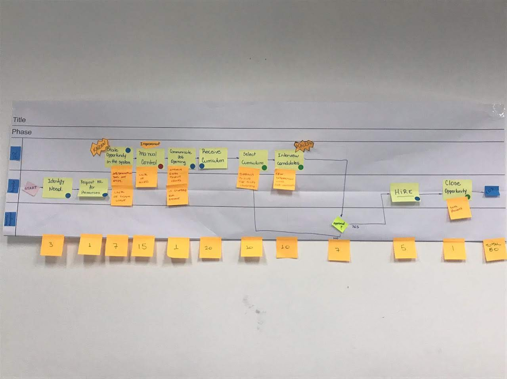
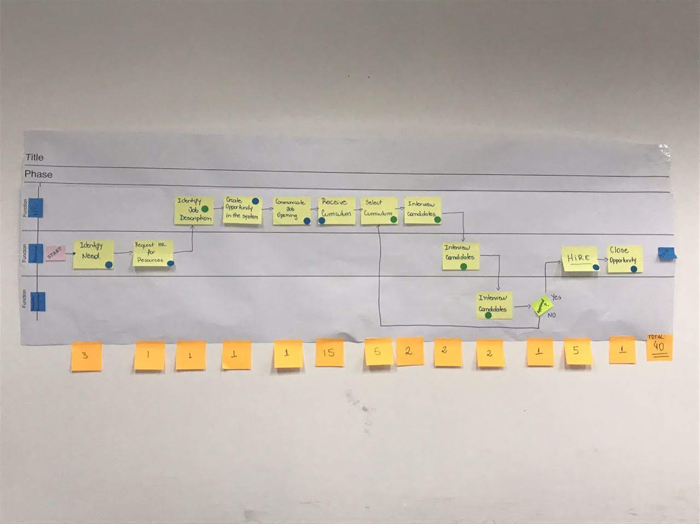

A entrada de quem chega decide o cliente do outro lado
Da atração aos primeiros 90 dias: como uma entrada tratada como papelada virou uma jornada com dono, tempo medido e acolhimento que não depende de sorte.
Índice
- Sumário executivo O que foi feito, em que escala, e o que ficou provado.
- Contexto e mandato O que foi autorizado, o que ficou fora e sob que limites.
- Reenquadramento do problema Do pedido de onboarding à jornada com dois clientes.
- Como o trabalho foi conduzido O mapa na parede, o corte e a costura.
- O antes e o depois Os artefatos originais de partida e o desenho final da jornada.
- O desenho da nova entrada Kit, Ponte da Chegada e reconhecimento entre pares.
- Entregas e resultados O que está instalado e o que foi observado.
- Tensões remanescentes O que o desenho não resolveu.
- Decisões de condução e aprendizado O que aqui é do autor.
- Fundamentação As tradições que compõem o roteiro.
01Sumário executivo
Uma operação industrial de grande porte, com padrão técnico alto, tratava a entrada de gente nova como uma sequência de formulários. O trabalho mapeou a jornada inteira na parede, com quem a opera, somou os dias de cada etapa e encontrou 80 dias somados entre a necessidade da vaga e o encerramento dela. O redesenho cortou o que não agregava, costurou os programas que a casa já tinha e instalou um papel com prazo para receber quem chega: a soma caiu para 40 dias na primeira rodada, metade do tempo, e a chegada passou a ser acompanhada até o dia 90.
Este case tem uma característica rara: os artefatos de partida sobreviveram. As fotografias da seção 05 mostram o fluxo original em post-its, com as dores em laranja e os dias somados etapa a etapa, e a primeira rodada de corte feita na mesma parede, com o mesmo método. O antes não é reconstrução de memória; está fotografado.
A tese em uma frase
A entrada é a primeira entrega da empresa a quem chega, e tem cliente dos dois lados: a pessoa que entra e quem depende do trabalho dela. Numa área de janela curta, o erro de quem chega mal recebido aparece do lado de fora, no fornecedor que não recebeu e na área que não consegue comprar de novo. Acolher bem não é gentileza: é qualidade operacional.
02Contexto e mandato
A iniciativa nasceu no RH de talentos, que queria olhar a jornada de contratação com outros olhos: não como uma sequência de formulários, mas como a primeira experiência que o colaborador tem do jeito como a empresa trabalha. A casa já tinha bons programas de gente. Eles existiam soltos, cada um acontecendo no seu canto: um kit de boas-vindas usado de vez em quando, um portal de reconhecimento entre colegas, uma premiação anual ancorada nos valores do grupo.
O que foi autorizado
| Dimensão | Conteúdo |
|---|---|
| Objeto | A jornada de entrada, da abertura da vaga ao dia 90 de quem chega |
| Perímetro | Atração, contratação, chegada e primeiros 90 dias, atravessando as áreas por onde a jornada passa |
| Abordagem | Mapear com quem opera, cortar o que não agrega e costurar o que já existe |
| Piloto documentado | Uma área de janela curta e calendário duro, do tipo contas a pagar, com papel de chegada descrito e checklist |
Os limites dados
- Sem programa novo. O desenho precisava funcionar com os programas que a casa já tinha, integrados, e não com mais um lançamento disputando atenção.
- Sem contratar para acolher. O papel de receber seria ocupado por quem já tem carteira cheia, o que obrigou a tratar agenda e reconhecimento como parte do desenho.
- Sem sistema novo. O reconhecimento roda no portal existente; o roteiro de chegada vive em pasta simples da área.
A restrição que definiu o desenho
Costurar sem criar. A tentação em projeto de experiência do colaborador é lançar um programa com nome e campanha. A empresa já tinha as peças; o que faltava era a costura, e costura é design. Essa restrição fez o trabalho inteiro ser de arquitetura de jornada, não de criação de conteúdo.
03Reenquadramento do problema
O pedido chegou como melhoria de onboarding, o que na prática significava melhorar a papelada do primeiro dia. A leitura da jornada mostrou três coisas que mudaram o recorte.
- A espera começava antes do primeiro dia
Atração e contratação somavam 80 dias na régua da parede, com etapas que existiam por hábito. O mapa na parede somou 80 dias, etapa por etapa, com quem opera o processo conferindo cada número.
- O acolhimento ficava por conta da sorte
Do gestor que tinha tempo, do colega ao lado. Quando ninguém tem o papel de receber, a chegada acontece por sobra de agenda, e o primeiro erro de quem chega é tratado como falha pessoal.
- Ninguém media a permanência aos 90 dias
O prazo de fechamento da vaga era medido com rigor; o desligamento precoce, que devolve a vaga ao início do funil e recomeça a conta, não aparecia em indicador nenhum.
04Como o trabalho foi conduzido
O método coube em quatro movimentos, e o primeiro deles está fotografado na seção 05.
| Movimento | O que foi feito | O que produziu |
|---|---|---|
| Mapear na parede | A jornada da vaga à contratação desenhada em post-its com quem opera, em raias por função, com as dores em laranja sob as etapas e os dias somados embaixo | O retrato de partida: 80 dias somados e as dores nomeadas por quem as vive |
| Cortar na mesma parede | Segunda rodada no mesmo formato: etapas eliminadas ou redistribuídas entre as funções, com a soma refeita na hora | Primeira versão enxuta: 40 dias, antes de qualquer sistema ou investimento |
| Costurar os programas | Kit de chegada, papel de recepção, portal de reconhecimento e premiação anual ligados numa jornada única, com a atração ancorada numa parceria com escola técnica local | Uma jornada só, da vaga ao dia 90, com dono em cada trecho |
| Documentar o papel | O papel de quem recebe descrito como papel, não como cargo: propósito, cinco responsabilidades, domínios, o que fica fora, atividades por onda e checklist da véspera ao dia 90 | Piloto documentado numa área de calendário duro, replicável para as demais |
Por que o mapa foi feito em dias, e não em percepção
Antes do mapa, a discussão sobre a entrada era opinião: cada área lembrava da sua parte e ninguém via a soma. Com os dias colados na parede, etapa por etapa, a demora deixou de ter dono difuso. A etapa de 15 dias e a de 20 dias apareceram para todo mundo ao mesmo tempo, e o corte deixou de ser negociação para virar aritmética.
05O antes e o depois
O antes está fotografado. As duas imagens abaixo são os artefatos originais do mapeamento, na parede da operação: a jornada como ela era, e a primeira rodada de corte feita com o mesmo método.


O depois, em desenho
Dimensão por dimensão
| Dimensão | Antes | Depois |
|---|---|---|
| Natureza da entrada | Checklist administrativo, medido pelo que foi entregue à pessoa | Jornada com dono, medida pelo que a pessoa consegue fazer |
| Atração | Vaga publicada e espera; triagem como filtro | Parceria com escola técnica local: duas semanas gratuitas que formam e selecionam ao mesmo tempo |
| Contratação | 80 dias somados, com etapas por hábito e controle manual | 40 dias na primeira rodada, com o que não agrega eliminado e entrevistas em paralelo |
| Chegada | Por sorte de agenda; acessos atrasando; dia inteiro assistindo | Véspera com kit, acessos conferidos e combinado do dia 1 enviado antes |
| Acompanhamento | Terminava na papelada do primeiro dia | Ponte da Chegada da véspera ao dia 90, com atividades por onda e encerramento declarado |
| Reconhecimento | Programas existentes, soltos da jornada | Certificado entre pares costurado à chegada, por categoria de desempenho ou por valor do grupo, acumulando na premiação anual |
| Medição | Só o prazo de fechamento da vaga | Tempo por etapa da jornada e permanência aos 90 dias no painel |
06O desenho da nova entrada
O papel: Ponte da Chegada
Quem recebe a pessoa nova não é o gestor, e o papel não é cargo: é escopo de autoridade com prazo, que começa na véspera e termina na sessão do dia 90. O propósito cabe em nove palavras: chegada segura e produtiva de quem entra na área. Cinco responsabilidades, cada uma com um verbo: percorrer o ciclo real com quem chega, revisar o trabalho antes do envio, responder dúvida em canal e prazo combinados, avisar o gestor quando a chegada trava, registrar no roteiro as dúvidas que se repetem.
- Fora do papel, por escrito: avaliar desempenho, opinar sobre efetivação, distribuir trabalho, aprovar, conceder acesso, ser o único canal da pessoa com a área. Quem chega precisa de um lugar para dizer "não entendi" sem que isso vire avaliação.
- Atividades por onda: véspera, dia 1, semana 1, dias 8 a 30, 31 a 60, 61 a 90 e a sessão de encerramento. O esforço se concentra nas quatro primeiras semanas e cai a partir do dia 30, com a revisão virando amostragem.
- Encerramento declarado: o papel termina no dia 90 com o roteiro de chegada atualizado. Se a chegada precisar de mais tempo, isso vira conversa com o gestor, não extensão silenciosa.
O reconhecimento: pago na moeda certa
Ocupar o papel custa tempo de quem já tem carteira cheia. Se o custo é real e o reconhecimento é vago, ninguém quer o papel no ciclo seguinte. O desenho reconhece em três moedas: tempo protegido na agenda nas primeiras semanas, certificado entre pares escrito por quem chegou, e registro como papel exercido no histórico da pessoa. E declara o que distorce: bônus por número de chegadas produz ocupante de crachá; nota de satisfação como métrica pune quem devolve erro; prêmio entregue trimestres depois apaga o sinal.
| Instrumento | Como funciona |
|---|---|
| Certificado por desempenho | Reconhecimento entre pares em quatro categorias (inovação, qualidade, entrega, serviço e suporte) e três níveis. Quem foi servido pelo trabalho escreve; a chefia não intermedeia |
| Certificado por valor | Quem reconhece escolhe um dos sete valores declarados do grupo e diz, em texto livre, o que a pessoa fez que trouxe o valor para a prática |
| Premiação anual | O reconhecimento acumulado entre pares entra na premiação da casa: acolher bem gera reconhecimento, e o reconhecimento aparece no ano |
| Regra de ouro | Reconhecer o que a pessoa controla. Quem ocupa a Ponte não controla se quem chegou vai ficar; controla se percorreu o ciclo, revisou o trabalho e devolveu o roteiro |
O roteiro que aprende
A cada encerramento de 90 dias, as dúvidas que se repetiram entram no roteiro de chegada da área. A chegada seguinte começa mais pronta que a anterior, sem depender de quem conduziu a primeira. É o mecanismo que faz o desenho melhorar sozinho depois que o projeto sai.
07Entregas e resultados
O que está instalado
- Jornada da vaga ao dia 90 mapeada com quem opera, com tempo por etapa e os artefatos de partida preservados em fotografia.
- Papel de chegada documentado: propósito, responsabilidades, domínios, fronteiras, atividades por onda e checklist, com piloto numa área de calendário duro.
- Dois modelos de certificado de reconhecimento entre pares, por categoria de desempenho e por valor do grupo, rodando no portal existente.
- Parceria de atração com escola técnica local: programa de duas semanas, gratuito para quem participa, que prepara e seleciona ao mesmo tempo.
- Roteiro de chegada por área, com rito de atualização a cada encerramento de 90 dias.
O que foi observado
| Resultado | Natureza da evidência |
|---|---|
| Atração e contratação de 80 dias somados para 40, metade do tempo | Medido na jornada: as duas somas estão fotografadas nos post-its de total (80 e 40) e o corte foi refeito etapa a etapa |
| Satisfação de quem chega subiu | Registro interno de pesquisa com os entrantes; valores não reproduzidos aqui |
| Pertencimento antecipado para os primeiros meses | Leitura qualitativa consistente na escuta; antes aparecia só depois do primeiro ano |
| O papel de receber fez surgirem lideranças no grupo | Observação de condução: quem acolheu bem apareceu, e apareceu pelo portal, sem formulário de avaliação |
| Reconhecimento interno de melhoria contínua para o time | Concedido pela própria casa ao trabalho da jornada |
O que este case não afirma
Não há número de retenção aos 90 dias comparando antes e depois: a permanência não era medida antes, e sem linha de base a comparação seria inventada. O que se afirma é o que o desenho instalou: a permanência passou a ser medida, e o desligamento precoce deixou de ser invisível.
08Tensões remanescentes
| Tensão | Por que permanece | Efeito prático |
|---|---|---|
| O papel consome agenda de quem já está cheio | A Ponte é ocupada por quem tem carteira, e o pico do papel coincide com as primeiras semanas de quem chega | Sem tempo protegido de verdade, o acompanhamento não acontece; marcar sessão em dia de corte é o jeito mais comum de ele falhar |
| A jornada atravessa áreas que não respondem ao RH | Acessos, posto de trabalho e agenda do gestor têm donos fora do perímetro | Medir o tempo por etapa expôs demoras que ninguém reconhecia como suas, e a conversa precisou ser conduzida área a área |
| Reconhecimento pode virar moeda | Todo incentivo bem desenhado convida ao jogo: contar chegadas, caçar certificado | As distorções estão declaradas no próprio desenho do papel, e a regra é reconhecer o que a pessoa controla |
| O roteiro depende do rito de encerramento | Se a sessão do dia 90 não acontece, o roteiro para de aprender | Acervo que para de crescer envelhece rápido; o rito é o elo fraco deliberadamente visível do desenho |
09Decisões de condução e aprendizado
| # | Decisão | Razão | Custo assumido |
|---|---|---|---|
| 1 | Costurar os programas existentes em vez de lançar um novo | A casa já tinha as peças; mais um programa disputaria atenção com os que já existiam | Sem lançamento, o trabalho fica sem vitrine, e precisa ser contado pelos resultados |
| 2 | Eliminar antes de otimizar | Otimizar etapa que não deveria existir é polir desperdício | Mexeu em etapas que tinham dono, e o corte precisou ser feito com o dono na sala |
| 3 | Mapear em dias somados, na parede, com quem opera | Sem a soma visível, a demora não tem dono e a discussão é opinião | Expôs números desconfortáveis na frente de todo mundo, de uma vez |
| 4 | Nomear o papel como papel, com prazo e encerramento | Cargo cria expectativa de promoção; favor não sobrevive ao primeiro trimestre apertado | Precisou explicar repetidas vezes que não era promoção nem avaliação |
| 5 | Separar quem acolhe de quem avalia | Quem chega precisa dizer "não entendi" sem que isso vire nota | O gestor abriu mão de parte do contato dos primeiros dias, e nem todo gestor gostou |
| 6 | Transformar a triagem em formação, com a escola técnica | Numa região de oferta curta, disputar quem está pronto é leilão; formar é canal próprio | A primeira turma leva mais tempo que uma contratação avulsa, e o retorno vem depois |
| 7 | Reconhecer o papel na moeda do tempo, não só do diploma | Reconhecimento que não vem em agenda não vem | Tempo protegido de quem acolhe sai da capacidade da área, e isso precisou ser dito com todas as letras |
O que eu faria diferente
Mediria a permanência aos 90 dias desde o primeiro dia do projeto, antes mesmo do redesenho. A ausência da linha de base é a única lacuna que este case não consegue fechar em retrospecto: o desenho instalou a medição, mas o antes ficou sem número, e a comparação mais valiosa do projeto ficou impossível de fazer.
E levaria o gestor da área para dentro do desenho do papel desde a primeira sessão. A fronteira entre a Ponte e o gestor foi escrita depois que as primeiras dúvidas apareceram; escrita antes, teria poupado as duas primeiras chegadas de um período de duplo comando.
10Fundamentação
| Tradição | O que ela aporta | Onde aparece |
|---|---|---|
| Lean | Eliminar antes de otimizar; o mapa com tempos por etapa; o corte feito com quem opera | As duas fotografias da seção 05 e a queda de 80 para 40 dias na primeira rodada |
| Design de serviço | A jornada como unidade de análise, da promessa da vaga à experiência vivida | Recorte da vaga ao dia 90; a entrada tratada como entrega com dois clientes |
| Experiência do colaborador | Os momentos que importam; medir o que a pessoa consegue fazer, não o que recebeu | Véspera, dia 1 e marcos de 30, 60 e 90 dias; permanência no painel |
| Design organizacional de papéis | Papel com propósito, responsabilidades, domínios e fronteiras explícitas, separado de cargo | A Ponte da Chegada, com encerramento declarado e o que fica fora por escrito |
| Desenho de incentivos | Reconhecer o que a pessoa controla; declarar o que distorce | As três moedas do papel e os dois modelos de certificado entre pares |
A entrada é a primeira entrega da empresa a quem chega. É ali que a promessa feita na vaga se cumpre ou se quebra. E quem chega mal recebido não erra sozinho: erra no cliente do outro lado.
Tese do projeto · jornada de entrada